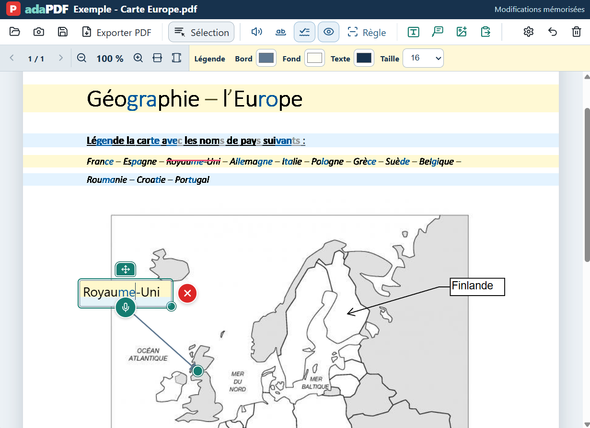

Les logiciels PAON
 adaPDF
adaPDF
Un lecteur éditeur de PDF pensé pour répondre aux besoins des élèves.
Aperçu du logiciel


Téléchargements
Les fichiers de ce logiciel seront bientôt disponibles ici.